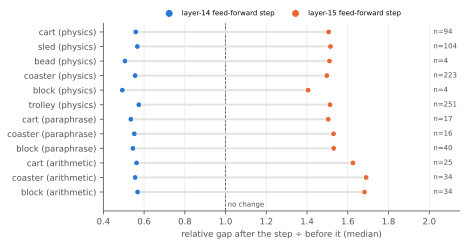
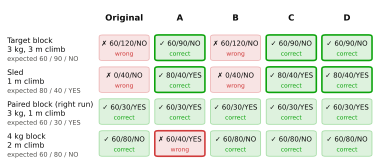
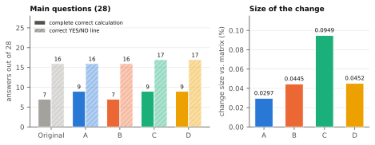
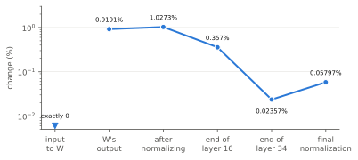
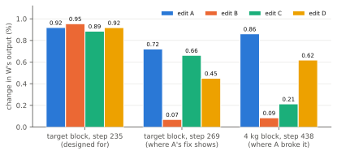
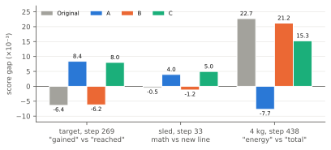
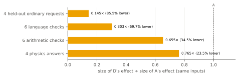

A quick note before you read. This is work in progress, not a finished paper. It covers the first four edits only. The bigger idea behind them (Section 1) has not been properly tested yet, and we are running more experiments now to see how far it goes. The samples are small, so please read the numbers as early signals. Any comments, big or small, are welcome.
Small language models make reasoning mistakes that are oddly specific. Gemma 4 E2B solves an energy problem correctly when a block climbs 1 m. When the climb is 3 m, it adds an earlier 1 m descent to the climb and concludes that it needs 120 J instead of 90 J. We asked whether we could fix that mistake by changing the model's weights directly, with no training, and whether watching the model's internal computation could tell us how. We made four edits, one at a time, to a single weight matrix. The first fixed the mistake and one other problem, and broke a third. The second removed the damage and also the fixes. The third kept both fixes and removed the damage. The fourth did the same with less than half the change, and with 85.5% less effect than the first on unrelated text. None of them improved new questions. The most useful lesson came from the failure: two edits that behaved almost identically at the point we designed them for behaved very differently 34 tokens later. This is an interim report, and the next round of experiments is running now.
When a language model gets something wrong, the usual fix is more training. Training is slow, needs data, and changes the whole model at once. A growing line of work changes the weights directly instead. ROME and MEMIT rewrite single facts with a small, calculated change to one or a few weight matrices [1, 2]. Recently, Takehi et al. had a frontier model edit the weights of Qwen3.5-0.8B by reasoning about them, and its MATH-500 score went from 7.9% to 48.1% [10].
Facts are the easy case: one question, one answer, one next word. Reasoning mistakes are harder. They happen in the middle of a long answer, they depend on what the model has already written, and the same mistake shows up with different numbers and wording every time.
The idea behind our work is this. While a model runs, its weights stay fixed. What changes is the signal for each token as it passes through the network, one operation after another. Each operation takes what arrives, changes it, and passes the result on. We call the ordered record of those changes a trace. Our hypothesis is that when a model uses the same skill again and again in varied situations, the skill leaves recurring marks in that trace. The marks will not have the same numbers or positions every time, and we do not expect to recover the whole mechanism. But a recognisable piece of it may be enough to guide a repair. Think of footprints in a forest: many travellers leave by different routes, yet their tracks can show that something guided them, even if you never learn that it was the stars.
That makes the questions we ask part of the instrument. A small network trained for one task is easy to read because it only does one thing. A large model does everything at once. Asking it many varied questions that all need the same skill is one way to get some of that focus back.
This report is the first step, and a limited one. We used traces to choose where to edit and to check how each edit behaved. But each edit's direction came from comparing just one correct answer with one wrong answer. Testing the hypothesis properly means building the edit from many traces, and that experiment is running now (Section 9). We report the four single-pair edits here because each one taught us something the next one used.
Editing facts. ROME [1] finds the layers that matter for a fact and adds a rank-one change, the simplest possible change to a matrix: one input pattern mapped to one output pattern. It also uses statistics of typical inputs so that the change mostly ignores them. Our fourth edit borrows that idea. MEMIT [2] spreads a change across several layers. AlphaEdit [3] protects what should stay the same by allowing only changes that leave chosen inputs untouched. Our second and third edits work in a similar way.
Finding versus fixing. Hase et al. [4] found that knowing where a fact is stored says surprisingly little about where an edit will work. We ran into a related problem: an edit that is right at the point you designed it for can still go wrong a few dozen tokens later.
Patching and steering. Activation patching [5, 6] swaps internal values between two runs to see which parts matter. Steering methods [7, 8] add a fixed direction to the model's internal values while it runs. Our first edit is like writing a steering direction into the weights, except that it only switches on for inputs that resemble the one it was built from, and it is saved in the model file.
Side effects. Edits often change more than intended [9, 11]. We saw this too. Every edit we measured changed the model's output scores everywhere, even where the final text stayed the same.
Model. We use the instruction-tuned Gemma 4 E2B [12] (35 layers) at 16-bit (BF16) precision, running in llama.cpp on one RTX 5080. Decoding is greedy: the model always picks its top-scoring token, so a run is fully repeatable. We checked this. Replaying the original model reproduced all 14,578 token choices on our 28 main questions, down to a fingerprint of the full score list at every step. Every recording we analyse passed the same check.
Edits. Each edit changes one matrix. We compute the change, round it to BF16 exactly as the model stores its numbers, and save a new model file. We compared every byte of each new file with the original: nothing outside that matrix changed. No training is involved anywhere.
Task. Each question describes an object that starts moving, goes down a slope, loses some energy on a rough patch, then climbs. The model has to give the available energy, the required energy, and whether the object makes it. Questions come in pairs that differ in one number, usually the climb height, which flips the answer. All four edits came from the pair below. With a 1 m climb the model is right: 60 J available, 30 J needed, YES. With a 3 m climb it adds the earlier 1 m descent to the climb and needs 120 J instead of 90 J. Its final NO happens to be correct, but the calculation is wrong.
Scoring. We read every answer. A complete correct calculation needs the right available energy, the right required energy and the matching conclusion. We count the literal YES/NO line separately. Answers that hit the 768-token limit count as they are. A correct final number does not mean the explanation is right: several fixed answers still mislabel heights.
| Set | Size | What it is |
|---|---|---|
| Main questions | 28 | 6 physics pairs, 3 reworded pairs, 3 arithmetic-only pairs, 4 numerical variants. Seen before any edit. |
| Extra questions | 8 | Added with B; treated as already seen for C and D. |
| New questions (A) | 24 | Three wordings of eight new energy problems, fixed before testing. |
| New questions (C, D) | 4 + 4 | Four new physics questions and four arithmetic/language checks, fixed before C. |
| Simple checks | 8 / 12 | Short arithmetic and language prompts (8 with A, 12 with B–D). |
| Ordinary requests | 8 + 4 | Instructions, editing, reference text and stories. 8 are used to build D; 4 are held out. |
We ran both questions of each pair side by side and compared their internal states at every step where the two answers were still word-for-word identical. We measured how far apart the two states were, relative to their size, before and after each layer. One pattern repeated with almost no exceptions: the relative gap shrank at the layer-14 feed-forward step and grew at layer 15. It held at 846 of 846 steps in a 4-bit version of the model, and at 1,707 of 1,708 in BF16 (Figure 2).

We do not think this is a physics signature. It shows up just as strongly when the model is only doing arithmetic, and it is mostly about size. At layer 14 the states themselves grow about 3.3 times while the gap between them grows about 1.8 times, so the relative gap drops. The pattern was useful as a pointer to layers 12–16. Within those layers we picked the layer-16 attention block by looking through the recordings, where the stretch from the end of layer 15 into layer-16 attention showed the two runs pulling apart. So the edit site came from exploring the data, not from a fixed procedure.
Our first intervention was a swap, not an edit. We copied one internal value at layer 16 from one run into the other, in both directions, at step 235 (just after both answers finish computing the 60 J) and, as a control, at step 0. The model's scores changed at that one step, but across the four swaps not a single word of either answer changed. One nudge at one step was not enough to change where the answer went. That pointed us to editing the weights, which acts at every step.
W is the layer-16 attention output matrix: 2,048 numbers in, 1,536 out (Figure 1). At step 235 we record what goes into W in the wrong run, , what comes out, , and what comes out in the right run, . The difference is what the right run does that the wrong one doesn't, at that moment. It is not a pure "correct minus mistake" signal, because the two questions also differ in climb height. We built one candidate per round and did not tune anything after seeing results. B, C and D each came with a written prediction before we ran them.
Edit A is the smallest change that makes W turn into the right run's output:
For any other input, it adds in proportion to how much that input resembles . So it acts strongly on inputs like the one it was built from and weakly on others.
Edit B. A fixed the target but broke a different problem, a 4 kg block (Section 6). B keeps the same correction but makes it ignore nine inputs from that problem: steps 430 to 438, ending where A first changed that answer. (We chose nine after looking at one, five and nine.)
Here removes the part of that looks like those nine inputs.
Edit C. B protected one spot. C protects whole passages. It starts from A's saved change and subtracts the smallest correction that leaves A's effect unchanged on 304 inputs along the two answers A fixed (every step up to where each answer first changed) and cancels A's effect on the nine protected inputs:
Rounding to BF16 makes this approximate. On the 304 inputs, C's effect differs from A's by a median of 9.85%, and the nine protected inputs keep 24–27% of A's effect.
Edit D. When we measured what A and C did to ordinary text, most of their effect came from one component shared by almost every input (Section 6.3). D handles this the way ROME does. It builds the edit using statistics from eight ordinary requests, so that the change responds to what is unusual about rather than what it shares with everything:
Nothing from the test questions or the other physics problems was used to build it.
| Edit | Numbers changed | Change size vs. matrix | vs. A |
|---|---|---|---|
| A | 200,965 | 0.030% | 1.0× |
| B | 312,037 | 0.045% | 1.5× |
| C | 523,778 | 0.095% | 3.2× |
| D | 331,670 | 0.045% | 1.5× |
Figure 3 follows the four problems that shaped each round. Figure 4 gives the totals.

A fixed the target. The edited model computes 54 + 30 − 24 = 60 J available and 90 J needed. It uses its own 3 m climb rather than copying the other run's 30 J, and the 1 m version stays word-for-word the same for all 450 tokens. A also fixed a sled problem it was never built for (0 / 40 / NO became 80 / 40 / YES). And it broke the 4 kg problem, which now subtracts the descent from the climb instead (60 / 80 / NO became 60 / 40 / YES). Overall, complete correct calculations went from 7 to 9 of 28; correct YES/NO lines stayed at 16. In the fixed answer, the first visible change is at step 269, where "The total height reached" becomes "The total height gained during the climb". The two words were within about 0.01 of each other in score (Figure 7). We don't think the word is the cause: the edit acts at every step.
B failed its prediction. The 4 kg answer came back, but the target and the sled went back to their original mistakes, word for word.
C passed. Both fixes survive, word-for-word identical to A's answers, and the 4 kg answer is word-for-word the original. All seven calculations the model already got right stay identical. Correct calculations went from 7 to 9, and YES/NO lines from 16 to 17.
D passed too, with the same totals as C at less than half of C's change size. All twelve arithmetic and language checks stay correct and identical.

Because runs are repeatable, the original and edited models write identical text up to the first changed token. Up to that point the input to W is exactly the same in both, so any difference starts at W. At step 235, A changes W's output by 0.92%. By the end of layer 16 that is down to 0.36%, by layer 34 it is 0.024%, and after the final normalization it is back up to 0.058% (Figure 5).

The most useful result in this report is the comparison between A and B (Figure 6). At step 235, the point both were designed for, they are nearly the same: they change W's output by 0.92% and 0.95%. At step 269, where A's fix first shows up, A is still at 0.72% but B has dropped to 0.07%, and B gives back the original mistake. Getting the edit right at one point told us almost nothing about what it would do 34 tokens later.
C, which protects the whole passage, keeps 0.66% at step 269 and cuts the protected 4 kg step from 0.86% to 0.21%. D keeps both outcomes with a different pattern (0.45% and 0.62%). At step 438, D's change is 72% of A's, yet the 4 kg answer stays exactly the original. The size of a change at one step does not map simply onto what the model writes.


The same text does not mean the same computation. For A, the score fingerprint changed at every one of 11,053 comparable steps across the 28 questions, including the 18 answers whose text did not change at all. B and C showed the same wherever we measured it.
We split each edit's effect on ordinary text into two parts: the part caused by the average input, and the rest. For A, 93% of the effect came from the average (Table 3). A change built from one input responds to whatever that input shares with every input. Here that was mostly a common component of the attention output, not anything about the mistake. All twelve arithmetic and language checks carried this hidden change under A, B and C, even though their answers did not change.
| A | B | C | |
|---|---|---|---|
| Share of effect from the average input | 93% | 78% | 92% |
| Effect left after removing the average (held out) | 11% | 31% | 14% |
D's effect on the four held-out ordinary requests is 85.5% smaller than A's, and 69.7% smaller on the language checks. It drops less on arithmetic (34.5%) and least on the physics answers themselves (23.5%), which is the order you would hope for (Figure 8). D still acts throughout the physics answers, including on plain prose. It is quieter on ordinary text, but it does not single out the steps where the physics happens.

| Edit | Questions | Correct calculations | Correct YES/NO |
|---|---|---|---|
| A | 24 new physics questions | 1 → 1 | 4 → 5 |
| A | 8 arithmetic and language checks | 8 → 8, identical | — |
| C | 4 new physics questions | 1 → 1 | 3 → 3 |
| D | the same 4 (not used to build D) | 1 → 1 | 3 → 3 |
| C, D | 12 arithmetic and language checks | 12 → 12, identical | — |
A's one extra YES/NO comes from an answer whose working is still wrong. The fixes hold on the problems they were built from. On these small sets of new questions, we saw no gain.
Checking an edit at one point is not enough. Fact-editing work usually checks an edit at the word it targets, plus a few rewordings [1, 9]. In a long answer, the inputs an edit meets keep changing as the model writes. A and B pass the same single-point check and do opposite things. An edit has to be designed, and checked, along the whole stretch of answer it is meant to change.
Protecting whole passages works, at least on known cases. The inputs C protects are the model's own states along the answers we cared about, not random text. C kept both fixes and the protected answer word-for-word identical, with a change of under 0.1% of the matrix. We don't know yet whether this generalizes.
Edits built from one example mostly respond to the background. 93% of A's effect came from the average input (78% for B, 92% for C). Borrowing ROME's input statistics (D) removed most of that. What should count as "background" for a reasoning edit is still open. Ordinary text was the obvious first choice, but the physics answers themselves show the smallest drop.
The outcomes are fragile. Every fix and every break first shows up at a step where two tokens were nearly tied (Figure 7). Everything here uses greedy decoding with fixed settings. We have not tested sampling or reworded questions.
Why didn't the fixes carry over? One untested guess: comes from a single pair and also contains the climb-height difference, so it may encode a fix for this particular context rather than for the general step that goes wrong. That would fit what we saw: fixes on some wrong answers, damage on a right one, and nothing on new problems. We have not measured this directly.
Where this leaves the hypothesis. These edits used traces to pick a site and to check side effects. They did not test the main idea: that the fix itself can be read off differences that recur across many right and wrong answers, applied wherever those differences live in the model, all at once, and confirmed by watching the edited model's traces move toward the right ones. Every edit here came from one pair, in one matrix chosen beforehand. What A–D show is that targeted, saved edits to a reasoning step are possible and measurable. They do not yet tell us whether recurring traces are a good guide to fixing.
This report stops partway. The next round keeps the same model, questions and settings, and changes how the edit is made. The goal is to see how far the hypothesis goes: whether an edit built from many traces does better than A–D, and where it stops working.
Acknowledgements. The experiments were built and run with help from AI coding agents, working under my direction. Every number here comes from a saved report backed by the raw evidence (commands, model-file checksums, recordings and full answers), and I'm happy to share any of it.
| Item | Value |
|---|---|
| Model file | Gemma 4 E2B-it, BF16 GGUF, 9,311,304,896 bytes |
| Engine | llama.cpp with a tensor recorder; same program for original and edited models |
| Hardware | One RTX 5080. A second GPU failed the repeatability check and was not used. |
| Decoding | Greedy; 768-token limit (512 for ordinary requests); context 2,048; batch 128; micro-batch 32 |
| Repeatability | Every recording reproduces its normal run's tokens and full-score fingerprints (14,578 steps for the original 28 questions; 3,396 for A; 2,061 for C; 3,807 for D) |
| Edited matrix | blk.16.attn_output.weight, 1,536 × 2,048 (layers counted from 0) |
| Design step | Step 235 of the 3 m answer, just after the shared 60 J line |
| D's statistics | Eight ordinary requests, equal weight each; λ = 0.05·trace(M)/2048 |
Baseline. On the 24 questions used for the observations in Section 4, the BF16 model gave correct YES/NO lines on 13/24, correct arithmetic-only results on 4/6, complete correct physics calculations on 2/18, and hit the length limit on 8/24. None of its answers had a fully correct physics explanation. The 4-bit model was weaker (8/24, 1/6, 0/18, 10/24).